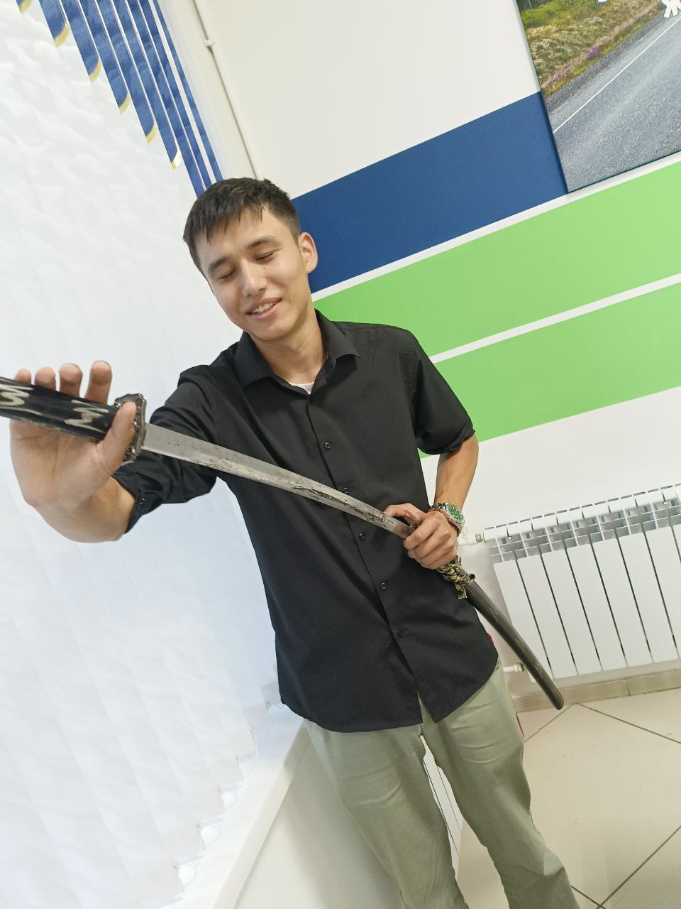
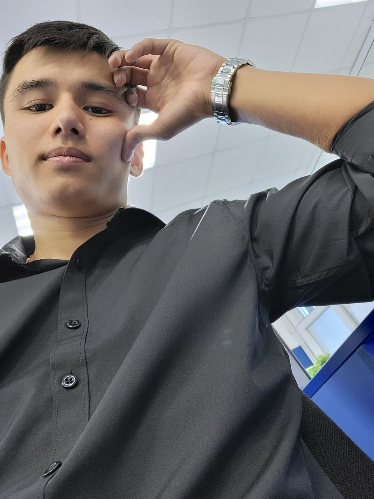
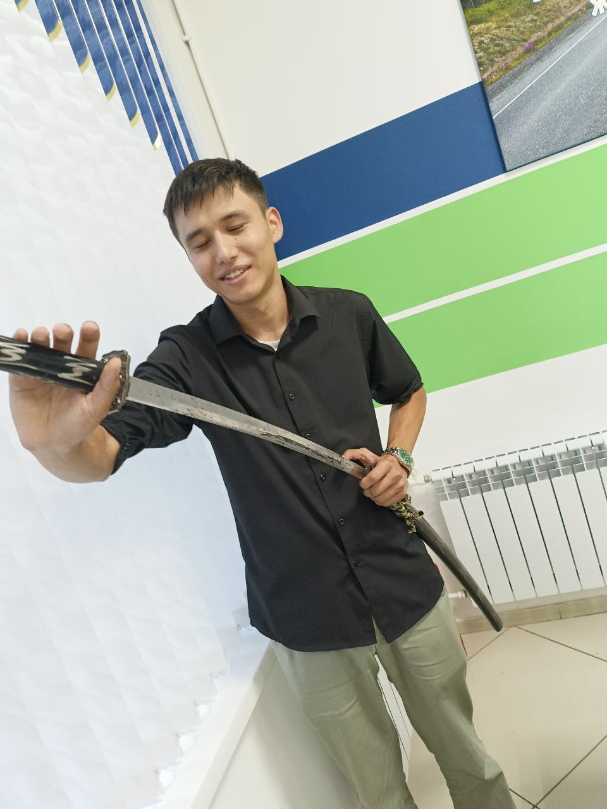
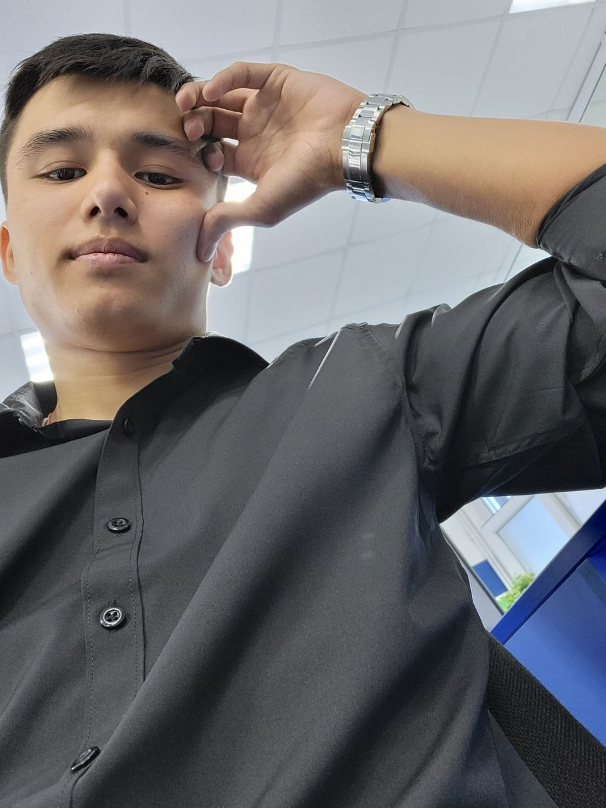

Дуанбай Бақтияр Болатұлы
23.04.2003
Мужской
Казах
Город Петропавловкс, улица Назарбаева 51
11.02.2023
Фотогалерея
 



Староста группы ИС-21. Очень много работал над несколькими проектами. Решил выйти прогуляться и купить соленного арахиса. На нем была красная футболка, синие джинсы, тонкая зеленая кофта, черная куртка
Пропал без вести